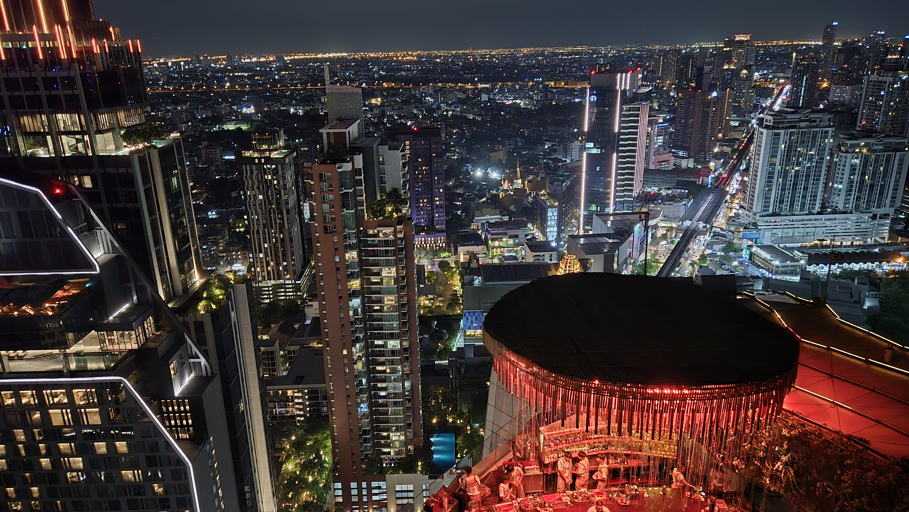

Bangkok After Dark: Rooftops, River Light, and New Friends
Bangkok hums after sunset. Lantern-lit sois spill into neon avenues, tuk-tuks purr by with laughter in the backseat, and sky bars float like quiet islands above the river’s ribbon of lights. Order a cold drink, lean into the breeze, and the city introduces you to someone new before you finish the first sip. It’s easy here—smiles at the night market, quick chats over street noodles, a shared photo of the glittering skyline from a rooftop that seems close to the stars. For travelers who love to socialize, Bangkok is effortless: welcoming, lively, and full of vantage points that make every conversation feel cinematic. Come for the views; stay for the energy and the people who turn a night out into a story.
If you have any questions or comments email me at goodpeoplenplaces@gmail.com.